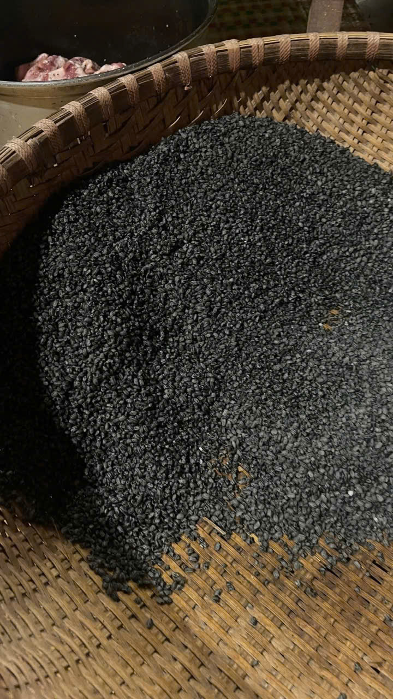
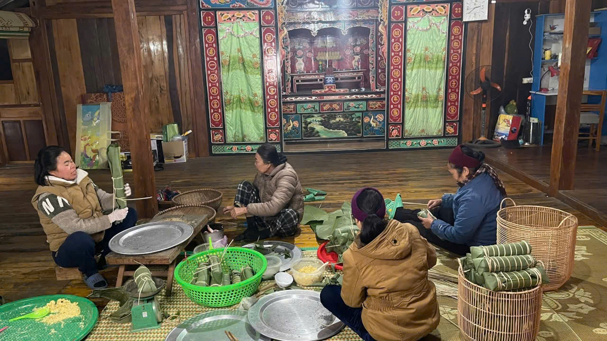
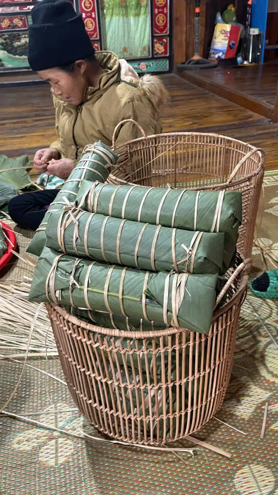
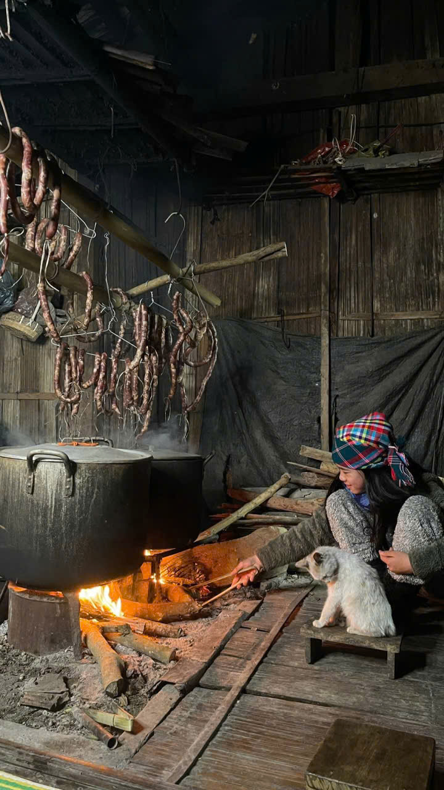
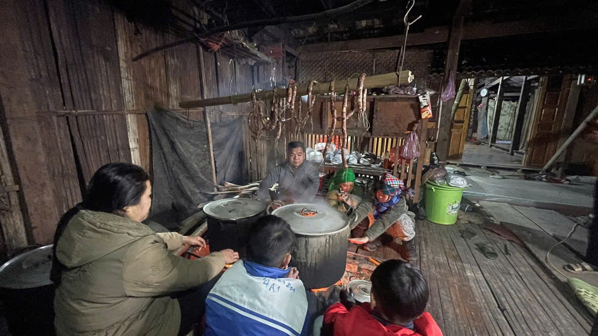
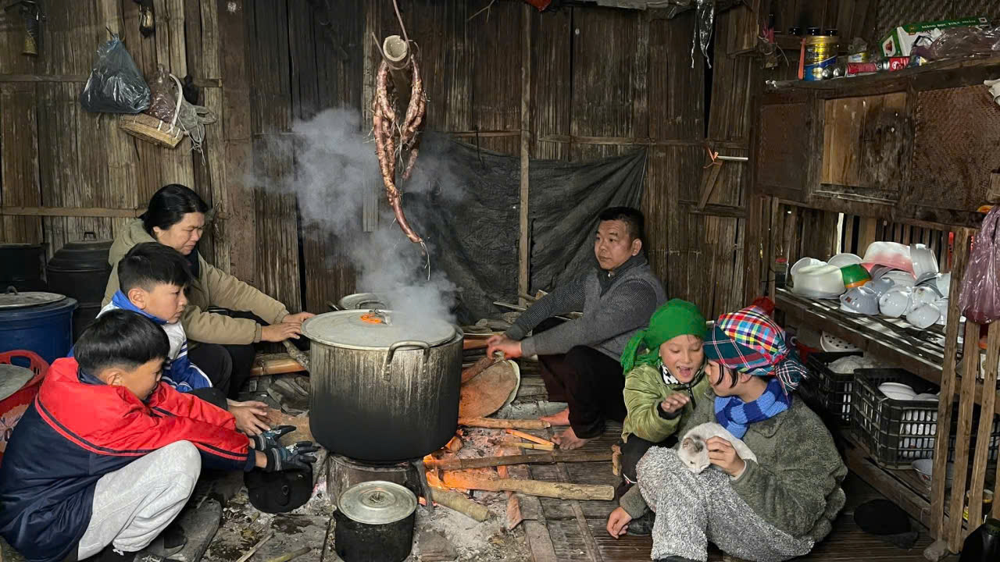

Gói bánh truyền thống ở Quỳnh Sơn, Bắc Sơn
Ẩm thực ở Quỳnh Sơn không chỉ là những món ăn trong mỗi bữa cơm gia đình mà còn gắn với những phong tục, sinh hoạt và ký ức của người dân địa phương.
Trong những dịp đặc biệt, việc cùng nhau chuẩn bị nguyên liệu, gói bánh và quây quần bên bếp lửa tạo nên một không khí rất riêng của bản làng. Mỗi công đoạn đều cần sự khéo léo và sự kiên nhẫn của những người tham gia.

Chuẩn bị nguyên liệu
Trước khi bắt đầu gói bánh, các nguyên liệu được chuẩn bị cẩn thận. Đây là công đoạn tưởng như đơn giản nhưng lại quyết định nhiều đến hương vị của chiếc bánh sau khi hoàn thành.
Những nguyên liệu gần gũi với cuộc sống vùng núi được lựa chọn và sơ chế để sẵn sàng cho các bước tiếp theo. Không khí chuẩn bị cũng là lúc mọi người cùng trò chuyện, chia sẻ công việc và tạo nên sự gắn kết.

Tỉ mỉ trong từng chiếc bánh
Gói bánh là công đoạn đòi hỏi sự khéo léo. Từng phần nguyên liệu được đặt vào lớp lá rồi nhẹ nhàng gấp và định hình.
Những đôi tay quen việc thực hiện các thao tác một cách tự nhiên. Với người lớn tuổi trong gia đình, đây còn là một công việc gắn với những ký ức về các dịp sum họp và những ngày đặc biệt của bản làng.


Bếp lửa và những câu chuyện bên nồi bánh
Khi những chiếc bánh đã được gói xong, chúng được đưa vào nồi để luộc. Bếp lửa lúc này trở thành nơi mọi người cùng quây quần.
Giữa không gian yên bình của bản làng, hình ảnh nồi bánh bên bếp lửa mang đến một cảm giác rất gần gũi. Thời gian chờ bánh chín cũng là khoảng thời gian để mọi người trò chuyện và chia sẻ những câu chuyện trong cuộc sống.

Hương vị của một nét đẹp truyền thống
Khi bánh hoàn thành, điều đáng nhớ không chỉ nằm ở hương vị mà còn ở cả quá trình mọi người cùng nhau chuẩn bị.
Từ nguyên liệu, đôi tay gói bánh cho đến bếp lửa, mỗi bước đều góp phần tạo nên một câu chuyện nhỏ về đời sống và ẩm thực của vùng đất Quỳnh Sơn.

Trải nghiệm ẩm thực tại Quỳnh Sơn
Với du khách đến Bắc Sơn, những trải nghiệm như tìm hiểu cách làm bánh, thưởng thức món ăn địa phương hay ngồi bên bếp lửa cùng người dân bản làng là những khoảnh khắc giúp chuyến đi trở nên gần gũi hơn.
Tại Dương Gia Đạt Homestay, chúng tôi mong muốn lưu giữ và giới thiệu những hình ảnh đời thường như vậy để du khách có thêm cơ hội tìm hiểu về văn hóa, con người và ẩm thực của Quỳnh Sơn, Bắc Sơn.